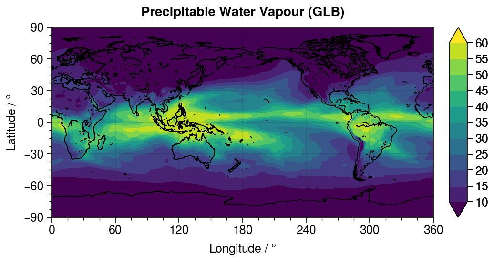
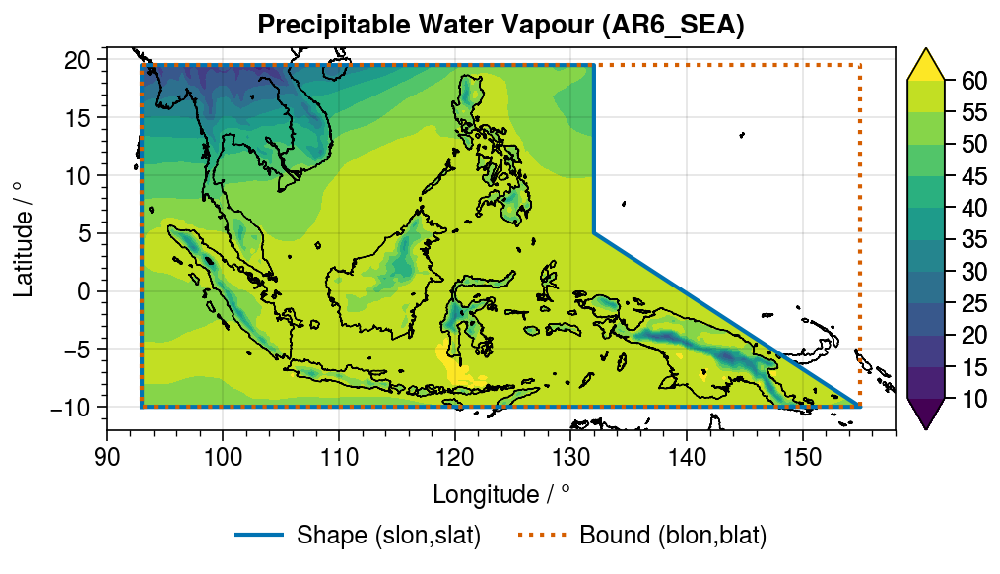

An Example with ERA5 Precipitable Water Data
In this example, we use GeoRegions to define custom GeoRegions, and extract precpitable water data from an example ERA5 dataset for this GeoRegion. This example demonstrates:
- Load a
GeoRegion - Extracting data for each of these
GeoRegions - Plotting the extracted data
Load Dependencies
First, let's load all the dependencies
Note: I personally prefer to use ProPlot to do my plotting. But because it has several dependencies and requires fiddling around with PyCall backends and Anaconda installations, this might not be for everyone
using DelimitedFiles
using GeoRegions
using NCDatasets
using PyCall, LaTeXStrings
pplt = pyimport("proplot")Load Dataset
I downloaded ERA5 Total Column Water Vapour data from the Climate Data Store for the month of January in 2020.
ds = NCDataset("tcwv.nc")
lon = ds["longitude"][:]
lat = ds["latitude"][:]
pwv = ds["tcwv"][:,:,1]*1
close(ds)I load the textfile I use to plot coastlines (ProPlot has this already, but I like my more detailed version).
coord = readdlm("/Users/natgeo-wong/Codes/plot/GLB-i.txt",comments=true,comment_char='#')
x = coord[:,1]
y = coord[:,2]And we plot the global dataset ...
pplt.close(); f1,a1 = pplt.subplots(aspect=2,axwidth=4)
c = a1[1].contourf(lon,lat,pwv',levels=10:5:60,extend="both",cmap="viridis")
a1[1].plot(x,y,c="k",lw=0.5)
a1[1].format(
xlim=(0,360),xlabel=L"Longitude / $\degree$",xlocator=0:60:360,
ylim=(-90,90),ylabel=L"Latitude / $\degree$",ylocator=-90:30:90,
suptitle="Precipitable Water Vapour (GLB)"
)
a1[1].colorbar(c,loc="r")
Using GeoRegions to extract data over Southeast Asia
Now, let's use GeoRegions.jl to extract data over Southeast Asia. We will use the region as defined by the AR6 IPCC report, AR6_SEA. First, we load the GeoRegion (in this case, a PolyRegion)
julia> geo = GeoRegion("AR6_SEA")
The Polygonal Region AR6_SEA has the following properties:
Region ID (regID) : AR6_SEA
Parent ID (parID) : GLB
Name (name) : Southeast Asia
Bounds (N,S,E,W) : [19.5, -10.0, 155.0, 93.0]
Shape (shape) : Point2{Float64}[[93.0, -10.0], [93.0, 19.5], [132.0, 19.5], [132.0, 5.0], [155.0, -10.0], [93.0, -10.0]]
(is180,is360) : (false, true)And then we load the PolyGrid information based on the lon and lat values from ERA5
julia> ginfo = RegionGrid(geo,lon,lat)
The Polygonal Grid has the following properties:
Grid Bounds (igrid) : [283, 401, 621, 373]
Longitude Indices (ilon) : [373, 374, 375, 376, 377, 378, 379, 380, 381, 382 … 612, 613, 614, 615, 616, 617, 618, 619, 620, 621]
Latitude Indices (ilat) : [283, 284, 285, 286, 287, 288, 289, 290, 291, 292 … 392, 393, 394, 395, 396, 397, 398, 399, 400, 401]
Longitude Points (glon) : [93.0, 93.25, 93.5, 93.75, 94.0, 94.25, 94.5, 94.75, 95.0, 95.25 … 152.75, 153.0, 153.25, 153.5, 153.75, 154.0, 154.25, 154.5, 154.75, 155.0]
Latitude Points (glat) : [19.5, 19.25, 19.0, 18.75, 18.5, 18.25, 18.0, 17.75, 17.5, 17.25 … -7.75, -8.0, -8.25, -8.5, -8.75, -9.0, -9.25, -9.5, -9.75, -10.0]
Region Size (nlon * nlat) : 249 lon points x 119 lat points
Region Mask (sum(mask) / (nlon * nlat)) : 21461 / 29631Next, using the info in the PolyGrid variable ginfo, we extract out the precipitable water vapour data for the region into a new variable newpwv. Although newpwv is gridded and thus rectilinear, with the aid of ginfo.mask we can set the pwv information outside the PolyRegion to NaN.
blon,blat,slon,slat = coordGeoRegion(geo)
glon = ginfo.glon; nglon = length(glon); ilon = ginfo.ilon
glat = ginfo.glat; nglat = length(glat); ilat = ginfo.ilat
newpwv = zeros(nglon,nglat)
for iglat = 1 : nglat, iglon = 1 : nglon
newpwv[iglon,iglat] = pwv[ilon[iglon],ilat[iglat]] * ginfo.mask[iglon,iglat]
endAnd we plot the resulting data. We see that although newpwv extends throughout the bound (red region), data is only retained within the actual shape (blue) of the GeoRegion.
pplt.close(); f2,a2 = pplt.subplots(aspect=68/33,axwidth=4)
c = a2[1].contourf(glon,glat,newpwv',levels=10:5:60,extend="both",cmap="viridis")
a2[1].plot(x,y,c="k",lw=0.5)
a2[1].plot(slon,slat,label="Shape (slon,slat)",legend="b",legend_kw=Dict("ncol"=>2,"frame"=>false))
a2[1].plot(blon,blat,label="Bound (blon,blat)",legend="b",linestyle=":")
a2[1].format(
xlim=(90,158),xlabel=L"Longitude / $\degree$",
ylim=(-12,21),ylabel=L"Latitude / $\degree$",
suptitle="Precipitable Water Vapour (AR6_SEA)"
)
a2[1].colorbar(c,loc="r")